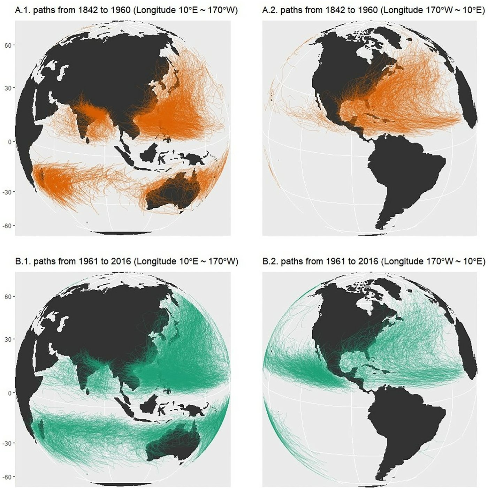
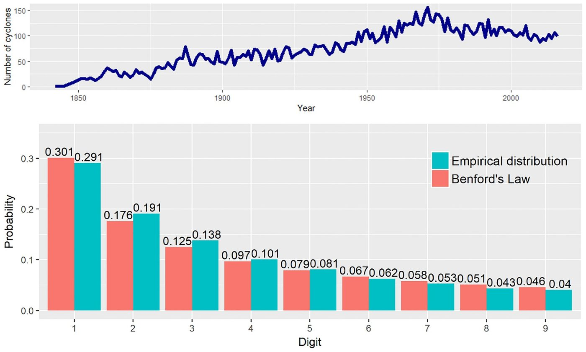
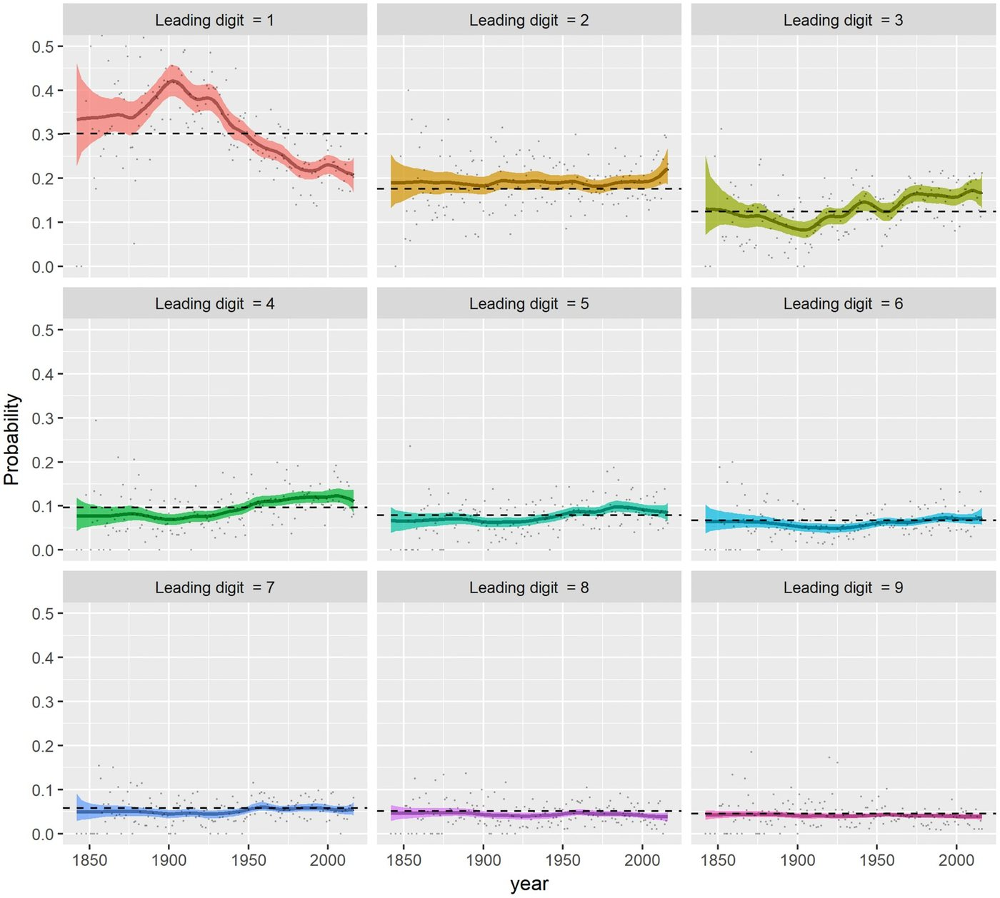
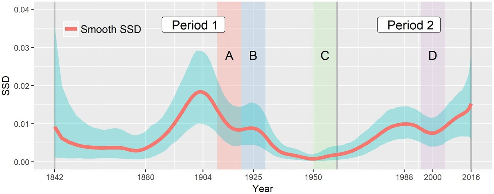
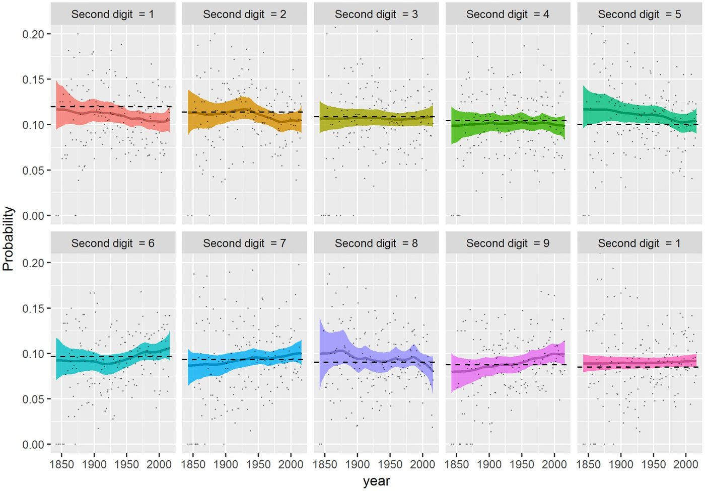
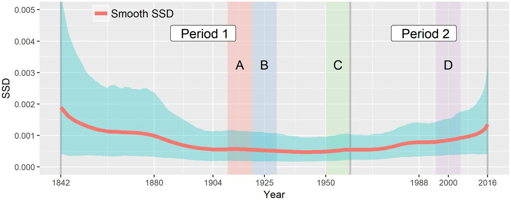

기술이 발전하면 태풍 기록도 더 고르게 될까
연구 해설 · PLOS ONE 14(4), e0213300 (2019)
관측 기술이 좋아지면 자료도 계속 고르고 믿을 만해질까? 1842년부터 2016년까지 전 세계 열대저기압(태풍, 허리케인 등)의 이동 거리 첫 자리 숫자가 벤포드 법칙에 얼마나 맞는지를 해마다 추적하는 베이즈 모형을 만들어 이 질문을 살펴보았다.
(1842~2016)
이동 거리
(1900년대→최근)
(1903년)
(2016년)
1왜 이 연구인가
여러 자릿수에 걸친 자료에서는 첫 자리 숫자가 고르게 나타나지 않는다. 1로 시작하는 값이 약 30%로 가장 많고, 9로 시작하는 값은 약 4.6%에 그친다. 이것이 벤포드 법칙이다.
이 법칙에서 벗어나면 자료의 품질이나 동질성에 변화가 있었을 수 있다. 그래서 회계 부정 탐지부터 자연재해 자료 점검까지 널리 쓰인다. 다만 어긋남이 곧 오류를 뜻하지는 않으며, 살펴볼 지점을 알려 주는 신호에 가깝다.
열대저기압 자료를 연도별 경험적 지표로 분석해, 1960년 이후 자료가 대체로 벤포드 법칙에 맞는다고 결론지었다.
해마다 관측 수가 적으면 경험적 SSD는 어긋남을 부풀릴 수 있다. 관측이 적었던 초기의 연도에서 특히 그렇다.
아홉 숫자의 확률이 시간에 따라 매끄럽게 변하는 모형을 세워, 불확실성과 함께 추적한다.
2데이터
미국 해양대기청(NOAA)의 IBTrACS 자료를 썼다. 2018년 5월 기준 위치 기록 348,703개에서 1842~2016년 기록을 가져와, 각 열대저기압이 지나간 점을 이어 이동 거리를 미터 단위로 계산하였다. 위치 기록이 하나뿐인 경우를 제외하면 12,741개의 이동 거리가 남는다.

주: 왼쪽은 동경 10도~서경 170도, 오른쪽은 서경 170도~서경 10도 방향의 지도이다.
전체 기간을 하나로 합치면 벤포드 법칙과 꽤 비슷하다.
| 첫 자리 | 1 | 2 | 3 | 4 | 5 | 6 | 7 | 8 | 9 |
|---|---|---|---|---|---|---|---|---|---|
| 벤포드 법칙 | 0.301 | 0.176 | 0.125 | 0.097 | 0.079 | 0.067 | 0.058 | 0.051 | 0.046 |
| 자료 | 0.291 | 0.191 | 0.138 | 0.101 | 0.081 | 0.062 | 0.053 | 0.043 | 0.040 |
| 차이 | −0.010 | +0.015 | +0.013 | +0.004 | +0.002 | −0.005 | −0.005 | −0.008 | −0.006 |
주: 차이는 이 해설의 계산이다. 논문 그림 2의 값을 옮겼다. 이 표로 계산한 SSD는 약 0.0007이다.
전체를 합친 SSD는 약 0.0007에 불과하다. 그러나 아래에서 볼 연도별 SSD는 1903년에 0.0184까지 오른다. 전체로 보면 잘 맞는 자료도 시기별로는 크게 어긋날 수 있고, 어긋나는 방향이 서로 상쇄될 수도 있다. 시간에 따라 추적해야 하는 이유이다.
[그림 2] 연도별 열대저기압 수와 첫 자리 분포
연간 기록 수는 19세기의 수십 개 이하에서 1970년 무렵 약 150개까지 늘었고, 1970년대 이후에는 대체로 안정적이다.

주: 붉은 막대가 벤포드 법칙, 청록 막대가 자료이다. 범례와 수치 기준이며, 논문의 그림 설명에 적힌 색은 반대로 되어 있다.
3분석 방법
핵심은 벤포드 법칙과의 비교를 연도별 표본 비율이 아니라 시간에 따라 변하는 확률 곡선으로 하는 것이다.
- 해마다 숫자를 센다.t년의 열대저기압 Nt개를 첫 자리 1~9로 분류하고, 이 빈도가 다항분포를 따른다고 놓는다.
- 확률을 시간 함수로 놓는다.다항 로지스틱 모형으로 확률의 합이 1이 되게 하고, 각 숫자의 선형예측식을 3차 B-스플라인으로 표현한다.
- 매끄러움은 자료에서 배운다.인접 계수의 차이에 1차 확률보행 사전분포를 준다(Bayesian P-spline). 변동의 크기 τ²도 함께 추정한다.
- 사후분포를 표집한다.IWLS 제안을 쓰는 Metropolis-Hastings로 표본을 얻어 95% 신용구간까지 계산한다.
- 어긋남을 하나의 지표로 요약한다.아래의 평활 SSD를 해마다 계산한다. 값이 0이면 벤포드 법칙과 정확히 일치한다.
4결과 ① 어떤 숫자가 움직였나

주: 실선은 사후평균, 음영은 95% 신용구간, 점은 연도별 표본 비율, 파선은 벤포드 법칙이다.
- 숫자 1이 가장 크게 움직였다. 확률이 20세기 초 약 0.4까지 올랐다가, 이후 한 세기 넘게 약 0.2까지 떨어졌다. 약 절반이 된 것이다.
- 숫자 3은 반대 방향이다. 숫자 1이 내려가는 시기에 기준선 위로 올라갔으나, 움직임은 훨씬 작다.
- 나머지는 기준선 근처이다. 숫자 2~7은 약간 위, 나머지는 약간 아래에서 움직인다.
- 초기는 불확실하다. 1850년대 무렵은 관측이 적어 구간이 훨씬 넓다.
5결과 ② 어긋남은 두 번 커졌다

주: 붉은 실선은 사후평균, 청록 음영은 95% 신용구간이다. 기간 1, 2와 A~D는 Joannes-Boyau 등(2015)의 구분이다.
| 시기 | 값 | 의미 |
|---|---|---|
| 1880년대 이전 | 구간이 넓음 | 표본이 적어 맞는지 틀리는지 판단하기 어렵다 |
| 1903년 | 0.0184 | 첫 번째 장기 주기의 정점 |
| 1940~1950년대 | 낮은 수준 | 첫 주기가 끝나고 가장 잘 맞는 시기 |
| 1989년 | 0.00995 | 두 번째 주기의 첫 봉우리 |
| 이후 저점 | 0.00757 | 소폭 하락 |
| 2016년 | 0.0153 | 두 번째 주기의 최고치, 표본 끝 |
어떤 수평선도 전 기간의 신용구간 안에 들어가지 않으므로, 논문은 전 기간 동질성 가설을 기각한다.
기술 발전(전신, 항공기)으로 어긋남이 줄었고, 일부 상승은 ENSO 같은 기후 변동일 수 있다고 해석하였다.
최근 수준이 1842~1890년보다 오히려 높은 경향을 보인다. 차이는 경험적 지표의 편향 때문일 수 있다고 본다.
기술은 쌓이기만 하므로, 기술 발전이 자료 동질성을 결정한다면 어긋남은 계속 줄어야 한다. 그런데 1970년대 이후 열대저기압 수가 안정적인데도 어긋남은 다시 커졌다. 논문은 여기서 기술 발전의 영향이 “제한적이었을 수 있다”고 해석한다.
6결과 ③ 둘째 자리도 같은 방향이다
벤포드 법칙은 둘째 자리 분포도 예측한다(0이 약 0.120, 9가 약 0.085). 둘째 자리 확률은 대부분 구간 안에서 완만하게 움직이고, SSD는 1950년 무렵까지 줄어든 뒤 최근까지 서서히 늘었다. 최근 이질성이 커졌을 수 있다는 첫 자리 결과와 일관된다. 다만 둘째 자리의 SSD는 첫 자리보다 값이 훨씬 작고 구간이 넓어, 보조적인 증거이다.
[그림 5, 6] 둘째 자리의 확률과 SSD

주: 패널 제목은 1, 2, …, 9, 1로 적혀 있으나, 기준선의 크기와 논문의 설명으로 볼 때 순서대로 둘째 자리 0~9를 뜻하는 것으로 보인다(이 해설의 판단).

7시사점과 한계
시사점
- 자료 품질은 저절로 좋아지지 않는다. 긴 기후 자료로 장기 추세를 볼 때는 시기별 동질성을 먼저 점검할 필요가 있다.
- 불확실성을 함께 본다. 관측이 적은 시기의 연도별 표본 지표만으로 판단하면 어긋남을 잘못 읽을 수 있다.
- 다른 분야로 확장할 수 있다. 논문은 부정 분석처럼 벤포드 법칙과의 부합도 변화를 추적하는 분야에도 적용할 수 있다고 본다. 벤포드 법칙을 거래 자료에 쓴 사례는 워시 트레이딩 해설에서 볼 수 있다.
- 원인을 검증하지는 않았다. 제목의 질문과 달리, 기술이나 기후 변수를 모형에 넣지 않았다. 기술 영향이 제한적일 수 있다는 것은 시기 패턴에서 얻은 해석이다. 이 결과로 기후변화가 원인이라고 말할 수는 없다.
- 어긋남은 곧 품질 저하가 아니다. 이동 거리의 실제 분포가 달라져도 첫 자리 비율이 변할 수 있다. 벤포드 법칙은 값의 범위가 충분히 넓을 때 잘 맞으므로, 거리의 범위나 수준이 변하면 자료의 질과 무관하게 숫자 1의 비중이 움직일 수 있다.
- 측정 방식: 이동 거리는 기록된 점을 이어 계산한다. 기록 간격이 시기별로 달라지면 계산된 거리도 달라질 수 있다. 본문에서는 이 효과를 따로 분리하지 않았다.
- 표본 끝: 곡선의 끝은 구간이 넓어진다. 2016년 값 0.0153이나 “1842~1890년보다 높다”는 비교는 사후평균 기준이고, 양쪽 신용구간은 겹치는 부분이 있다. 두 시기의 차이를 형식적으로 검정한 수치는 본문에 없다.
- 부록: 이 해설은 본문만 확인하였다. 경험적 SSD의 편향을 보여 주는 수치 실험과 R 코드는 논문의 S1 File에 있다.
용어 풀이
- 벤포드 법칙
- 첫 자리 숫자 d의 확률이 log10(1 + 1/d)로 작은 숫자일수록 높다는 경험 법칙.
- SSD
- 숫자별 확률과 벤포드 확률의 차이를 제곱해 더한 값. 클수록 법칙에서 멀다.
- 동질성
- 자료가 기간 전체에 걸쳐 같은 방식과 성격을 유지하는 정도.
- 다항 로지스틱 모형
- 여러 범주의 확률이 합해서 1이 되도록 설명변수와 연결하는 모형.
- P-spline
- 구간별 다항식을 이어 만든 곡선에서 인접 계수의 차이에 벌점을 주어 매끄럽게 만드는 방법.
- 신용구간
- 자료를 본 뒤 모수가 일정 확률로 들어 있다고 보는 구간.
- ENSO
- 엘니뇨·남방진동. 적도 태평양의 수온과 대기가 주기적으로 변하는 현상.
논문: Lee, J. & de Carvalho, M. (2019). Technological improvements or climate change? Bayesian modeling of time-varying conformance to Benford’s Law. PLOS ONE, 14(4), e0213300. doi:10.1371/journal.pone.0213300. 자료: IBTrACS.
그림 1~6은 논문에서 그대로 옮겼고(CC BY 4.0), 설명과 표는 이 페이지를 위해 번역·발췌하였다. 이준호의 기여: 조사(investigation), 방법론(methodology), 시각화(visualization). 이 페이지는 연구 내용의 해설이다.